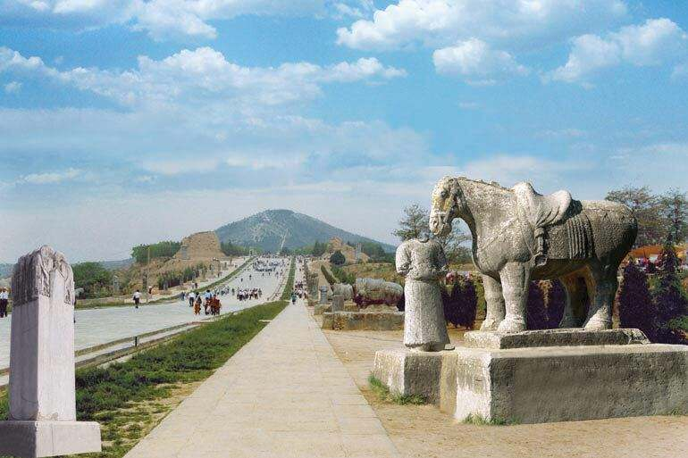

乾陵是陕西关中地区唐十八陵之一，位于陕西省咸阳市乾县县城北部6千米的梁山上，为唐高宗李治与武则天的合葬墓。陵园规模宏大，陵域占地“周八十里”（《唐会要》）。陵园有内外两重城墙，其中内城南北墙各长1450米，东城墙长1583米，西城墙长1438米，总面积接近240万平方米。
乾陵建成于唐光宅元年（684年），神龙二年（706年）加盖，采用“因山为陵”的建造方式，陵区仿京师长安城建制。除主墓外，乾陵还有十七个小型陪葬墓，葬有其他皇室成员与功臣。
乾陵是唐十八陵中主墓保存最完好的一个，也是唐陵中唯一一座没有被盗的陵墓。1961年03月04日，乾陵被国务院公布为第一批全国重点文物保护单位。